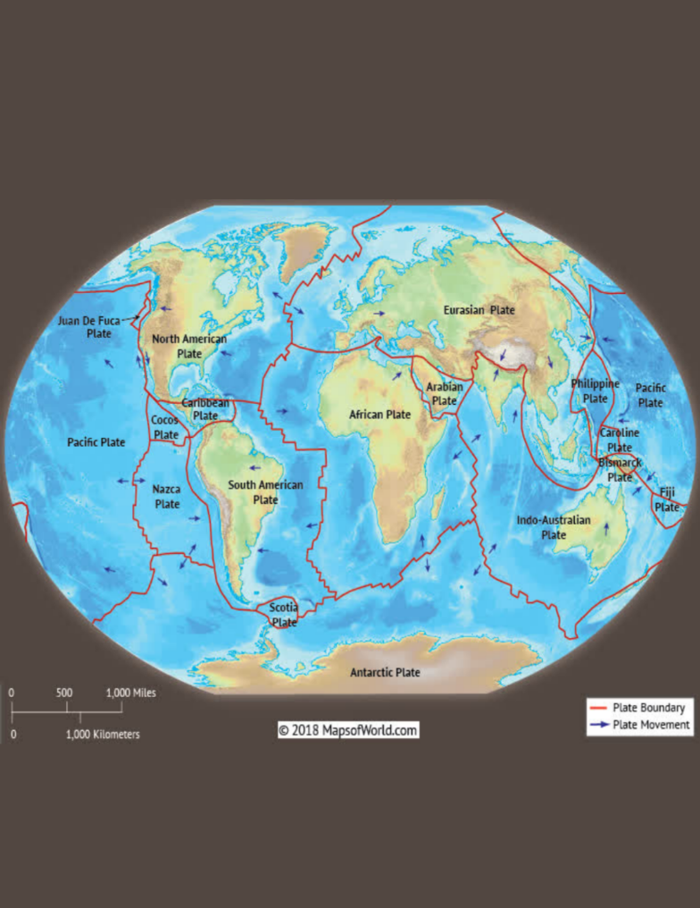

بازگشت
بازگشت

سال 1967 میلادی، مورگان (ژئوفیزیکدان آمریکایی)
تئوری زمینساخت صفحهای را ارائه نمود. براساس این تئوری، سنگکره از نظر زمینساختی شامل چندین صفحه اصلی است که تحت تاثیر نیروهای ناشی از همرفت گوشته، در جهتهای مختلفی حرکت میکنند.
براساس خصوصیات فیزیکی، کره زمین متشکل است از: سنگکره، سُستکره، مِزوسفِر (گوشته پایینی)، هسته بیرونی و هسته درونی.
در مرز صفحات زمینساختی سه نوع حرکت میتواند رخ دهد، که عبارتند از:
حرکت دور شونده صفحات از همدیگر (مرز واگرا)
حرکت نزدیک شونده صفحات به سمت همدیگر (مرز همگرا)
حرکت جانبی صفحات در کنار همدیگر (مرز تبدیلی)
حرکات مختلف صفحات زمینساختی منجر میشود به:
وقوع زمینلرزه در طول و یا به موازات مرزهای شکستگی بین این صفحات (زمینلرزههای بینصفحهای)
شکستگی پوسته و وقوع زمینلرزه در بخشهایی از درون این صفحات (زمینلرزههای درونصفحهای)